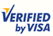

Pagos con Tarjetas Visa
Las transacciones realizadas con su tarjeta Visa, utilizan un nuevo servicio de Visa: Verified by Visa, el cual hace de que estas transacciones sean autenticadas y seguras. Al confirmar las identidades de los tarjetahabientes, se reducen las transacciones de comercio electrónico fraudulentas o en disputa, y es una forma de satisfacer las inquietudes del consumidor con respecto a las compras en línea.
¿Que es Verified by Visa?
Verified by Visa es un nuevo servicio que le permitirá a las Instituciones Financieras autenticar la identidad del tarjetahabiente durante el proceso de pago de compras en comercios en línea participantes.

Beneficios de Verified by Visa
- Mayor seguridad del consumidor para compras por Internet.
- No se requiere ningún software especial de aplicaciones en el dispositivo de acceso del tarjetahabiente.
- Es fácil de usar. Sólo se necesita de un password y su tarjeta Visa para efectuar la compra.
¿Cómo funciona?
En primer lugar, el tarjetahabiente debe de inscribirse en el servicio, por única vez, visitando el sitio de inscripción de su Banco Emisor. Durante el proceso de inscripción, se le formulan al tarjetahabiente una serie de preguntas con fines de seguridad, después de lo cual, selecciona un password para autenticarse a sí mismo, y acuerda una frase que se usará como mensaje de garantía personal para que el Banco Emisor lo pueda autenticar al realizar una transacción.
3-D SECURE: La Tecnología detrás de Verified by Visa
El protocolo 3-D Secure sustenta el nuevo servicio de pagos Visa diseñado para perfeccionar y validar pagos efectuados por Internet. 3-D Secure es una tecnología de autenticación que usa encriptamiento Secure Socket Layer (SSL) y un Plug-in al Servidor del Comercio que informa y verifica los participantes con fines de autenticación durante una compra en línea. Asimismo, protege la información de pago con la tarjeta durante su transmisión por Internet.